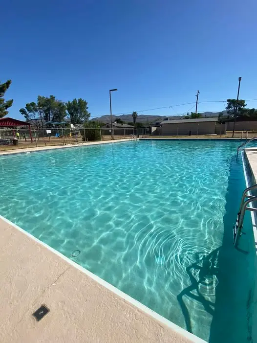

The Pool Is Empty.
The Laughter Has Stopped.
The Kearny town pool wasn't just a pool. It was where kids learned to swim. Where families gathered on summer afternoons. Where the community came together. Now it sits empty — a concrete monument to what this crisis has already taken.


"When you drain the pool, you don't just lose water.— A Kearny Resident
You lose the heart of a community."

This Is What Happens When a Town Runs Out of Water.
Arizona is full of ghost towns. Places where the mine closed, the well went dry, or the people just gave up. Kearny has watched it happen to its neighbors. The abandoned buildings. The empty streets. The silence where children used to play.
This will not be Kearny's fate. Not if Mayor Curtis Stacy and the Town Council have anything to say about it. Not if the residents who have already cut their water usage by 33% have anything to say about it. And not if the MARS technology beneath their feet lives up to its promise.